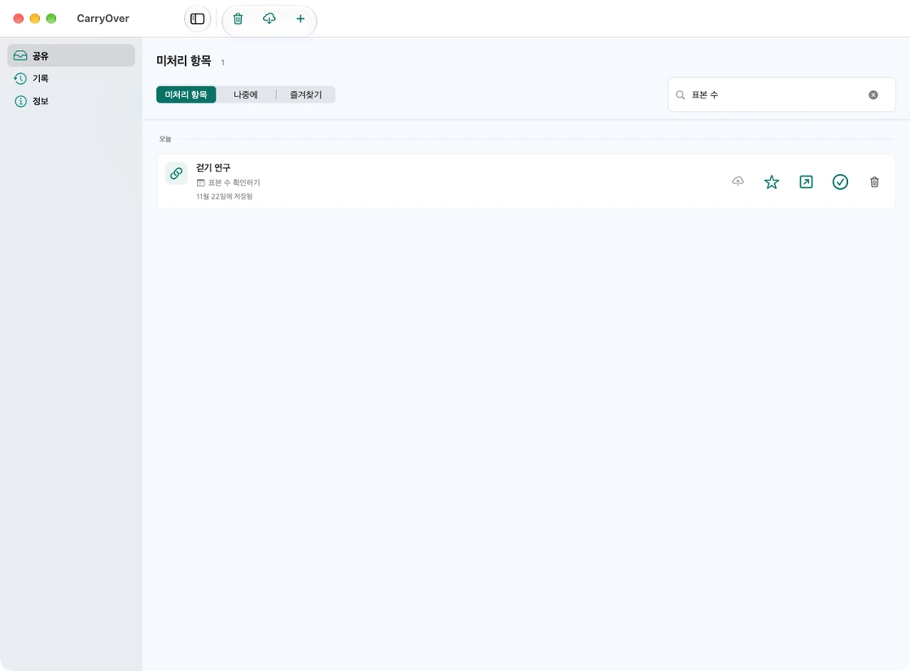
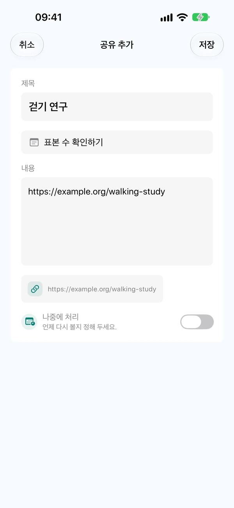
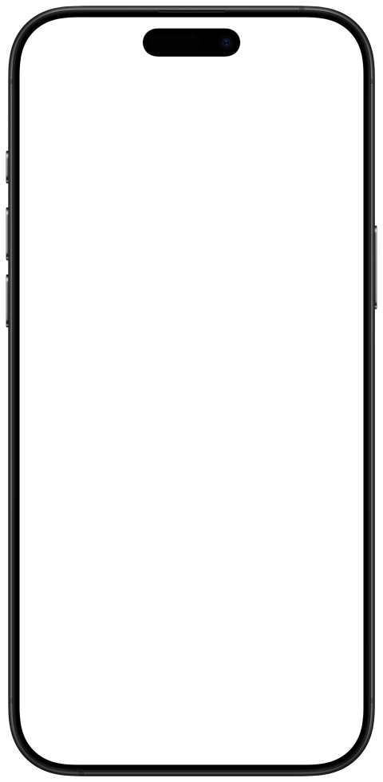
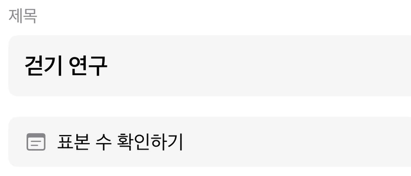
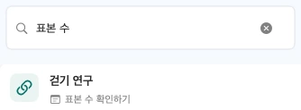

출퇴근길에 발견한 게시물
시스템 공유를 지원하는 소셜 앱에서 유용한 게시물을 저장하세요. Mac으로 돌아와 출처를 열고 자세히 확인할 수 있습니다.
iPhone이나 iPad에서 눈길이 간 자료를 저장할 때 이유도 한 줄 남기세요. 나중에 Mac에서 그 메모로 자료를 다시 찾을 수 있습니다.
iPhone, iPad, Mac용 CarryOver를 App Store에서 받으세요.



iPhoneiPadMac
링크, 게시물, 아이디어를 CarryOver로
걷기 연구를 저장하면서 ‘표본 수 확인하기’라고 적어 보세요. 메모는 비워 둬도 됩니다.

Mac에서 ‘표본 수’를 검색하세요. 제목을 잊어도 메모가 일치하는 연구를 찾을 수 있습니다.

iPhone이나 iPad에서 저장한 링크, 인용문, 이미지를 Mac에서 다시 열어 보세요. 제목이 생각나지 않아도 출처 도메인, 기억나는 구절, 당시 남긴 메모로 찾을 수 있습니다.
시스템 공유를 지원하는 소셜 앱에서 유용한 게시물을 저장하세요. Mac으로 돌아와 출처를 열고 자세히 확인할 수 있습니다.
iPhone이나 iPad 공유 메뉴에서 링크, 인용문, 이미지를 저장하세요. ‘표본 수 확인하기’처럼 한 줄을 덧붙이면 Mac에서 열었을 때 왜 저장했는지 떠올릴 수 있습니다.
아이디어를 직접 메모하고 알림을 설정하세요. 시간이 날 때 이어서 처리하고, 끝나면 완료로 표시하세요.
지원하는 앱의 시스템 공유 메뉴에서 텍스트, 링크 또는 이미지를 저장하세요. CarryOver에서 아이디어를 직접 기록할 수도 있습니다.
미완료 항목은 저장한 지 오래되어도 목록에 남습니다. 중요한 발견은 즐겨찾기하고, 실제로 처리한 뒤 완료로 표시하세요.
미처리 목록이나 기록에서 출처 도메인, 공유한 글의 일부, 개인 메모 또는 주제로 검색하세요.
완료한 항목은 기록으로 이동합니다. 다시 처리하려면 미완료 목록으로 복원하세요.
날짜와 시간을 정하고 시스템 알림을 허용하세요. 알림을 누르면 저장한 항목이 열립니다.
같은 Apple 계정으로 로그인한 iPhone, iPad와 Mac 사이에서 iCloud로 동기화합니다. 네트워크와 iCloud 상태에 따라 지연될 수 있습니다.
원래 자료는 그대로 두고 메모와 주제를 덧붙일 수 있습니다. 출처를 열어 내용을 확인하고 일이 끝나면 완료로 표시하세요. 글을 쓸 때는 항목 하나의 출처와 메모를 Markdown 파일로 내보낼 수 있습니다.
출처 앱이 실제로 공유하는 텍스트, 링크 또는 이미지를 저장합니다. 소셜 게시물은 전체 내용 대신 링크로 공유될 수 있습니다. 원래 링크를 열려면 인터넷 연결이나 로그인이 필요할 수 있습니다.
내용은 먼저 기기에 저장됩니다. 기기 간 동기화에는 동일한 Apple 계정, iCloud 활성화와 인터넷 연결이 필요합니다. 동기화 상태를 확인하고 필요하면 다시 시도하세요. 즉시 동기화가 보장되지는 않습니다.
미처리 목록이나 기록에서 출처 도메인, 공유한 글의 일부, 개인 메모 또는 주제로 검색하세요. 검색 결과에서 출처를 열어 확인해도 자동으로 완료 처리되지 않습니다.
지원되는 공개 HTTPS 기사는 직접 텍스트 사본을 저장해 오프라인으로 읽을 수 있습니다. 기사 사본은 저장한 기기에만 남습니다. 항목 세부 정보 › 추가 작업 › 기사 사본 만들기
현재 버전은 하루 저장 횟수에 제한이 없으며 별도의 Pro 업그레이드가 필요하지 않습니다. 지역별 제공 여부와 가격은 App Store에서 확인하세요. 도움말 보기